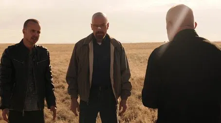
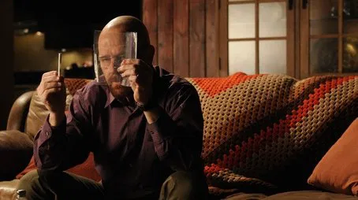
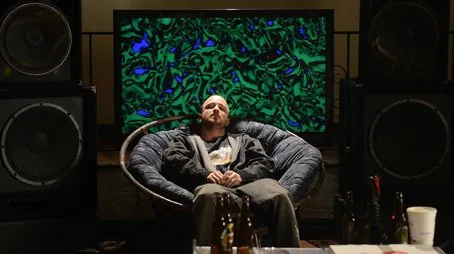
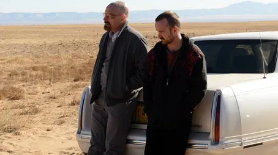

| Número |
Títol |
Descripció |
Imatge |
| 1 |
Live Free or Die |
Walter i Jesse s'enfronten a la necessitat d’eliminar els rastres del laboratori mòbil. Hank comença a descobrir pistes que poden portar al veritable culpable. |
 |
| 2 |
Madrigal |
Els efectes de la mort de Gus afecten tots els involucrats. Walter i Skyler han de prendre decisions delicades sobre com gestionar el negoci i el diner il·legal. |
 |
| 3 |
Hazard Pay |
Walter, Jesse i Mike intenten expandir el negoci de manera segura. Les tensions dins del grup creixen i els riscos legals són més elevats. |
 |
| 4 |
Fifty-One |
Skyler celebra el seu aniversari, però la relació amb Walter es complica. La pressió i la culpa afecten a tots els membres de la família. |
 |
| 5 |
Dead Freight |
Walter, Jesse i Mike planegen un robatori arriscat de subministrament de productes químics. La tensió arriba al màxim i un error podria ser fatal. |
 |
| 6 |
Buyout |
El negoci arriba a un punt crític i es plantegen decisions sobre associacions i traïcions. La desconfiança entre els socis s’incrementa. |
 |
| 7 |
Say My Name |
Walter consolida el seu domini en el negoci de metanfetamina i s’imposa com a Heisenberg davant dels seus rivals. La tensió i el perill arriben a cotes extremes. |
 |
| 8 |
Gliding Over All |
Walter aconsegueix expandir el seu imperi a nivell nacional. La violència i la por s’intensifiquen a mesura que la seva fama creix. |
 |
| 9 |
Blood Money |
Hank descobreix la veritat sobre Walter. La tensió familiar i criminal arriba a un punt crític, i la paranoia s’instal·la definitivament. |
 |
| 10 |
Buried |
Walter intenta protegir els seus béns i la seva família mentre Hank i l’FBI s’acosten al seu imperi. El perill és constant i les decisions han de ser ràpides. |
 |
| 11 |
Confessions |
Walter manipula mitjançant les mitges veritats i les mentides. La tensió creix entre els implicats i les relacions es tornen cada cop més complicades. |
 |
| 12 |
Rabid Dog |
Jesse decideix actuar per la seva pròpia mà després de descobrir traïcions. La situació es torna explosiva i imprevisible. |
 |
| 13 |
To’hajiilee |
La tensió arriba al màxim quan Walter és acorralat per Hank i el càrtel. Les decisions i els enfrontaments marquen el destí dels protagonistes. |
 |
| 14 |
Ozymandias |
Clímax dramàtic: morts inesperades i pèrdues irreparables. La vida de Walter i Jesse es veu completament transformada. |
 |
| 15 |
Granite State |
Walter intenta escapar i planeja el seu futur lluny de la justícia. La tensió és màxima mentre la seva situació es complica. |
 |
| 16 |
Felina |
Final de sèrie: Walter executa el seu pla final. La història arriba a una conclusió que tanca tots els fils argumentals. |
 |